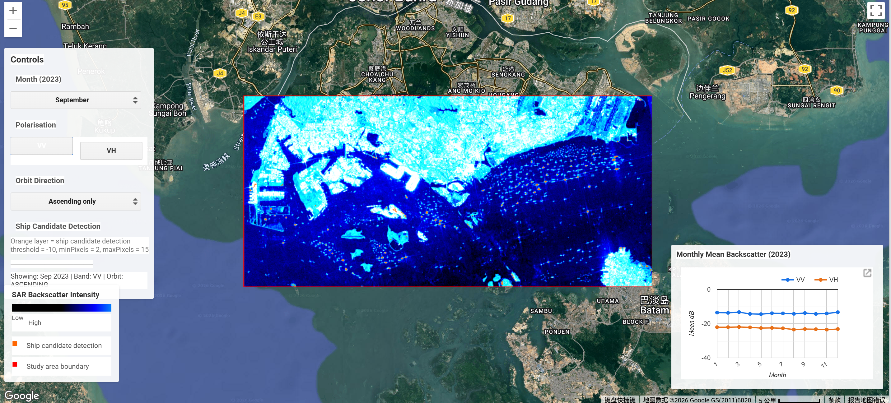

Interactive Analysis of Maritime Activity in the Port of Singapore Using Sentinel-1
Project Summary
Problem Statement
This project addresses the challenge of understanding maritime activity patterns in the Port of Singapore using remotely sensed data. As one of the busiest port regions in the world, Singapore experiences dense ship traffic and complex spatial use across port zones, anchorage areas, and shipping lanes. Our application aims to provide an interactive way to explore these spatial patterns using satellite radar imagery.
End User
This application is designed for students, researchers, and users interested in maritime monitoring and spatial analysis. It helps users explore how satellite imagery can reveal activity patterns in port environments and supports better understanding of how maritime space is used in a globally significant shipping hub.
Data
The project uses Sentinel-1 GRD data from Google Earth Engine. Sentinel-1 is a Synthetic Aperture Radar (SAR) dataset that provides day-and-night, all-weather observations. We focus on the Port of Singapore and surrounding waters, filtering images from 2023-01-01 to 2023-12-31. The selected images use IW mode and include both VV and VH polarisations.
A total of 109 Sentinel-1 images were identified for the study area across 2023, comprising 61 ascending and 48 descending orbit passes. Monthly image counts were calculated to confirm temporal data availability, and the results show relatively stable coverage throughout the year.

Figure: Monthly Sentinel-1 image count in the study area for 2023.
Why Sentinel-1?
Sentinel-1 was selected because SAR imagery is particularly suitable for maritime monitoring. Unlike optical imagery, it is unaffected by cloud cover and lighting conditions, making it well suited to busy coastal and port environments. The VV polarisation channel is sensitive to surface roughness and large metallic structures such as ship hulls, while VH captures volume scattering and can help distinguish between vessel types and background clutter.
Limitations
Although Sentinel-1 is useful for maritime analysis, it also has some limitations:
- Radar imagery is affected by speckle noise, which can reduce the clarity of individual features
- Interpretation is less intuitive than optical imagery and requires domain knowledge
- Orbit direction and viewing geometry may affect backscatter comparability across passes
- Near-shore areas produce complex mixed signals due to land-water boundary effects
- Ship detection in this project remains approximate and has not been validated against AIS or manually labelled vessel data
- Connected-pixel and size filtering reduce some false positives, but near-shore clutter and strong non-ship reflections may still affect detection quality
Methodology
Overview
The project follows a five-stage processing pipeline: data filtering and collection, speckle filtering, water and land masking, ship candidate detection, and interface-based analytical visualisation. Each stage is implemented in Google Earth Engine using JavaScript and is documented in the project repository for reproducibility.
Stage 1: Data Filtering and Collection
The study area (AOI) was defined as a rectangular polygon covering the Port of Singapore and surrounding waters (longitude 103.60°E to 104.05°E, latitude 1.15°N to 1.36°N). Sentinel-1 GRD imagery was filtered by this AOI, the 2023 calendar year, IW instrument mode, and the presence of both VV and VH polarisation bands. This produced a collection of 109 images suitable for analysis.
A median composite image was generated as the baseline output for each time period. The median operator was selected over mean compositing because it is more robust to outliers such as transient bright targets or atmospheric artefacts.
Stage 2: Speckle Filtering
SAR imagery inherently contains speckle noise — a granular, salt-and-pepper texture caused by the coherent nature of radar signals. If left untreated, speckle can produce false positives in vessel detection and reduce the visual interpretability of the imagery.
A 3×3 focal mean filter was applied to each image in the collection before compositing. This smooths local pixel variation while preserving the general spatial structure of maritime features such as ship wakes and port infrastructure. The filtered output was compared against the raw composite to verify noise reduction without excessive blurring.
Stage 3: Water and Land Masking
To focus analysis on open water and suppress land-related backscatter, two masking steps were applied:
Water mask: The JRC Global Surface Water dataset (occurrence layer) was used to identify pixels with greater than 50% historical water occurrence. Only these pixels were retained for further analysis, effectively removing land and built-up areas from the image.
Near-shore buffer: Coastal and near-shore areas produce complex mixed signals where land and water backscatter overlap, leading to high rates of false vessel detections. A 500-metre exclusion buffer was applied around all land boundaries using the USDOS LSIB simplified coastline dataset. Pixels within this buffer zone were removed from the clean output layer.
Stage 4: Ship Candidate Detection
After preprocessing, ship candidates were extracted from the clean VV backscatter layer using a threshold-based detection approach. Pixels with VV backscatter above a selected threshold were first identified as bright targets. To reduce random noise and non-ship artefacts, connected-pixel filtering was then applied. Very small isolated detections were removed using a minimum connected-pixel threshold, while overly large bright objects were excluded using a maximum connected-pixel threshold.
Several parameter combinations were tested to evaluate the stability of the detection results, including threshold values (-12, -10, -8), minimum connected pixels (1, 2, 3), and maximum connected pixels (10, 15, 25). Across the selected Singapore test scene, the main offshore ship targets remained relatively stable under these parameter ranges, suggesting that the main detections were driven by consistent high-backscatter targets rather than isolated random noise.
A final parameter set of threshold = -10, minPixels = 2, and maxPixels = 15 was selected as a balanced configuration. This setting preserved the major offshore targets while reducing some near-shore false positives. The output of this stage is a ship candidate detection mask, which forms the analytical basis for the following visualisation and interpretation steps.

Figure: Final ship candidate detection result using threshold = -10, minPixels = 2, and maxPixels = 15.
Stage 5: Interface and Analytical Outputs
The ship candidate detection result from Stage 4 is then used as the basis for the interactive application and subsequent interpretation of maritime activity patterns. Rather than repeating the detection process, this stage focuses on transforming the detection output into more interpretable user-facing layers and analytical summaries.
This includes map-based exploration of ship candidate distributions, comparison of monthly SAR composites, chart-based inspection of backscatter variation, and visual interpretation of maritime activity density across different parts of the Port of Singapore. In this way, Stage 5 builds directly on the detection output generated in Stage 4 and integrates it into the final interactive application.
Interface
The interactive application provides the following features for exploring maritime activity in the Port of Singapore:
- Month selector: Users can select any month in 2023 to view the corresponding Sentinel-1 median composite image for that period.
- Polarisation toggle: Users can switch between VV and VH polarisation bands to explore different radar backscatter characteristics. VV is more sensitive to surface roughness and large structures, while VH captures volume scattering and is useful for distinguishing ship types.
- Orbit direction filter: Users can choose between ascending passes, descending passes, or both combined, allowing comparison of viewing geometry effects on backscatter intensity.
- Ship candidate detection layer: In VV mode, threshold-based ship candidates are displayed using connected-pixel and size filtering, providing an approximate indicator of maritime activity density.
- Monthly mean backscatter chart: A time series chart in the bottom-right corner shows mean VV and VH backscatter values across all 12 months of 2023, enabling users to identify temporal patterns in maritime activity.
- Map legend: A colour scale legend is displayed to support interpretation of SAR backscatter values from low (dark) to high (bright).
Ship candidate detection is currently displayed for the VV band only, because the detection workflow is based on filtered VV backscatter rather than VH imagery.

Figure: Screenshot of the interactive application showing monthly Sentinel-1 SAR imagery, the ship candidate detection layer in VV mode, and the monthly mean backscatter chart.
The Application
The interactive application is embedded below. Use the controls on the left panel to explore maritime activity patterns by month, polarisation, and orbit direction. The ship candidate detection layer is currently displayed in VV mode and is based on thresholded VV backscatter with connected-pixel and size filtering.